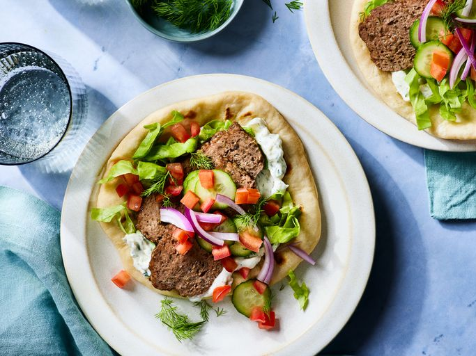

Gyro page

Description
This traditional Greek meal is bursting with bright colors,
juicy meat, and creamy tzatziki sauce! Fresh vegetables join in to add some fresh
crunch, and all get wrapped up in a freshly baked pita!
Ingredients
- Ground Lamb
- Ground Beef
- Onion
- Tzatziki Sauce
- Tomatoes
- Lettuce
- Garlic
- Oregano
- Cumin
- Salt
- Pepper
Steps
- Make Gyro Meat
- Bake
- Slice Meat
- Brown Meat
- Assemble Gyro
Homepage!